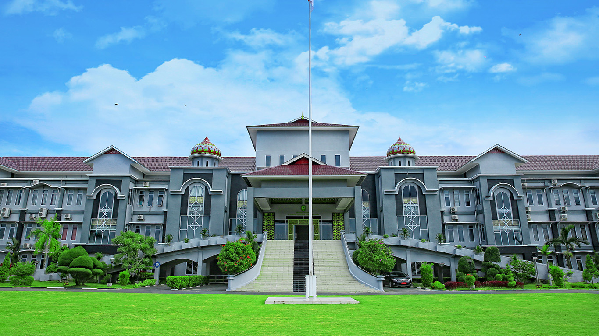

Kota Tanjungpinang

Tanjungpinang atau Tanjung Pinang (disingkat Tg. Pinang) adalah ibu kota dari Provinsi Kepulauan Riau, Indonesia. Kota ini terletak di Pulau Bintan dan beberapa pulau kecil seperti Pulau Dompak dan Pulau Penyengat. Kota Tanjungpinang dahulunya adalah pusat pemerintahan Kesultanan Riau-Lingga. Sebelum dimekarkan menjadi kota otonom, Tanjungpinang adalah ibu kota Kabupaten Kepulauan Riau (sekarang Kabupaten Bintan). Kota ini juga awalnya adalah ibu kota Provinsi Riau (meliputi Riau daratan dan kepulauan) sebelum kemudian dipindahkan ke Kota Pekanbaru.
Kota ini memiliki cukup banyak daerah pariwisata seperti Pulau Penyengat yang hanya berjarak kurang lebih 2 mil dari Pelabuhan Sri Bintan Pura, Pantai Trikora dengan pasir putihnya terletak kurang lebih 65 km dari kota, dan Pantai Buatan yaitu Tepi Laut yang terletak di garis pantai pusat kota sebagai pemanis atau wajah kota (waterfront city).
Sejarah
Pada masa Hindia Belanda, Tanjungpinang merupakan pusat pemerintahan Karesidenan Riouw. Kemudian di awal kemerdekaan Indonesia, menjadi ibu kota Provinsi Riau. Pada tahun 1957, Tanjungpinang menjadi ibu kota Provinsi Riau. Namun dua tahun kemudian ibu kota propinsi itu dipindahkan ke Pekanbaru.[4] Setelah itu statusnya menjadi Kota Administratif hingga tahun 2000. Berdasarkan UU Nomor 5 Tahun 2001, pada tanggal 21 Juni 2001 statusnya ditingkatkan menjadi Kota Tanjungpinang. Pusat pemerintahan yang semula berada di pusat Kota Tanjungpinang, kemudian dipindahkan ke Senggarang (bagian utara kota).[5] Hal ini bertujuan untuk pemerataan pembangunan serta mengurangi kepadatan penduduk yang selama ini berpusat di Kota Lama (bagian barat kota). Pada tahun 2002, Kota Tanjungpinang kembali menjadi ibu kota provinsi, yakni Provinsi Kepulauan Riau.
Pariwisata
Pulau Penyengat merupakan salah satu kawasan wisata di Kota Tanjungpinang. Pulau seluas 3,5 km² ini berada di sebelah barat Kota Tanjungpinang dan dapat ditempuh 15 menit dengan transportasi laut. Pada pulau ini terdapat banyak peninggalan lama dengan wujud bangunan dan mak ossss am yang telah dijadikan situs cagar budaya. Selain itu juga dijumpai kelenteng atau vihara di kawasan Kampung Bugis dan Senggarang yang sekaligus menjadi kawasan wisata religi. Wisata lainnya juga dapat ditemukan di Pantai Impian, Tugu Pensil, Tepi Laut, Mall Ramayana Tanjung Pinang, Bestari Mall, Bintan Indah Mall, Tanjungpinang City Center dan sebagainya.